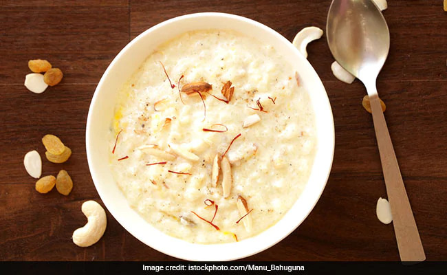
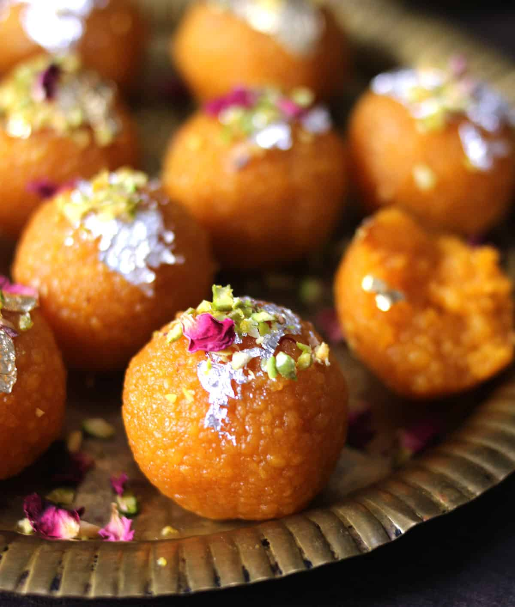
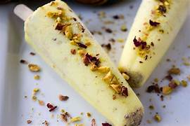
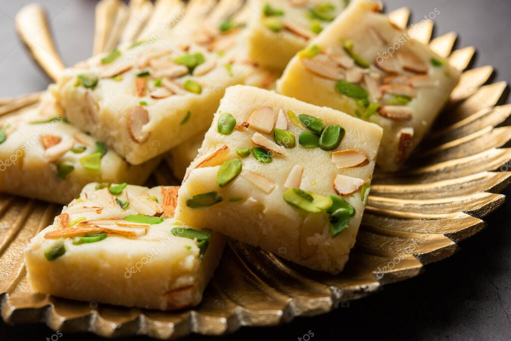
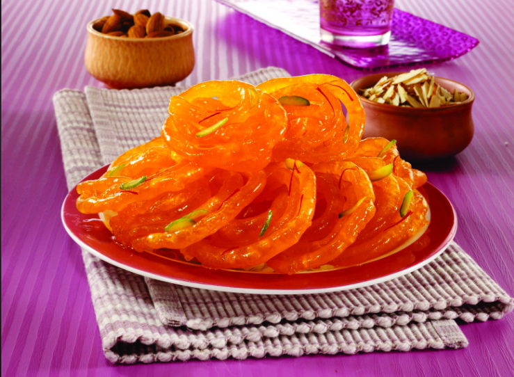

Popular Desserts


View Recipe
Kheer
Creamy rice pudding cooked with milk, sugar, and flavored with cardamom and saffron.

View Recipe
Ladoo
Round, bite-sized balls made from flour, sugar, and ghee, often flavored with nuts.

View Recipe
Kulfi
Traditional Indian ice cream made from thickened milk and flavored with cardamom or saffron.

View Recipe
Barfi
A fudge-like dessert made with condensed milk and flavored with cardamom, coconut, or nuts.

View Recipe
Jalebi
Crisp, deep-fried spirals made with fermented batter and soaked in sugar syrup.